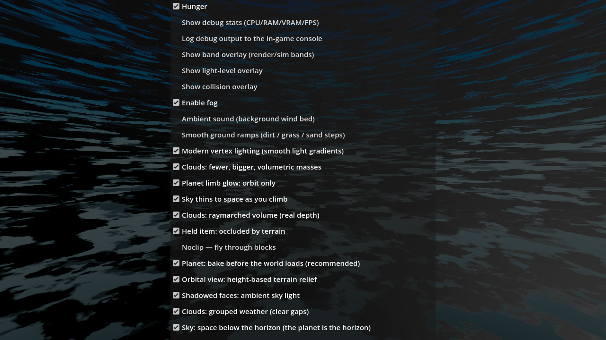
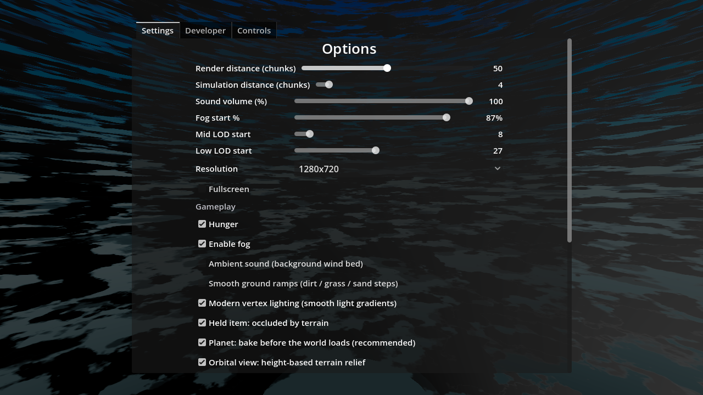
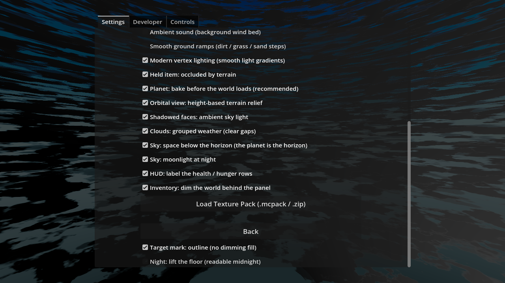
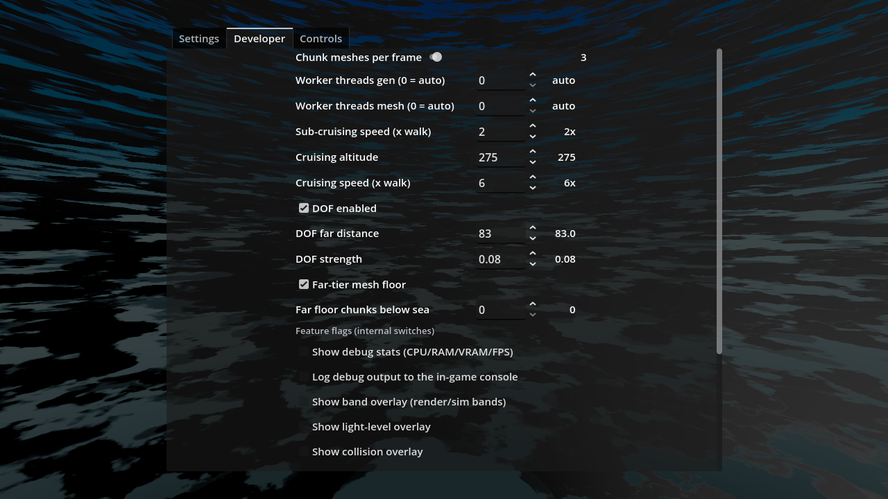
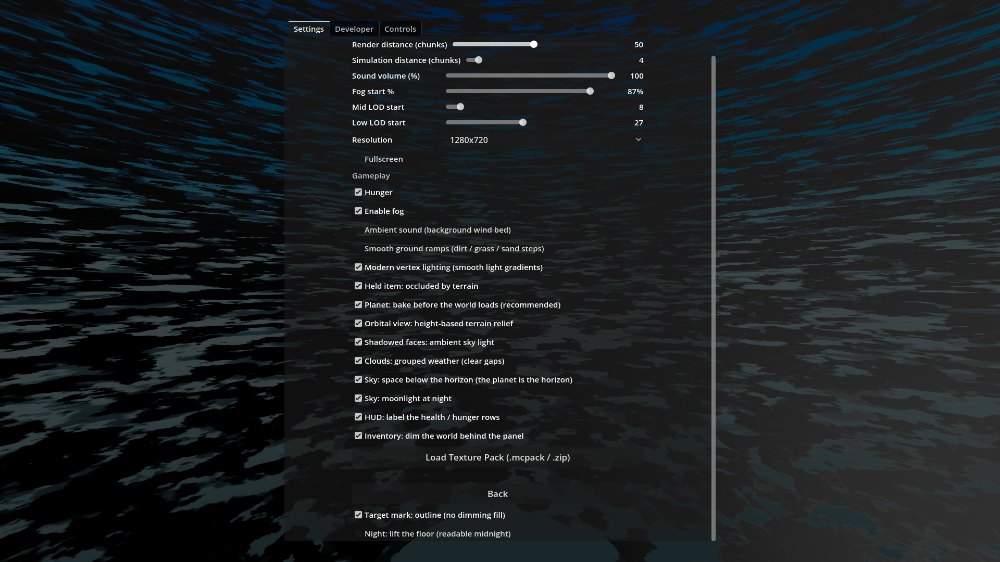

Verdict: the defect is confirmed exactly as suspected (growth without a container) and fixed: every tab page of the options panel is now a bounded, scrollable container, and the 12 feature-flag / internal switches sit under the Developer section where the user said they belong. Every setting keeps its key, default and env override; the settings arm is green with its row count reported; genhash is 25/25 byte-identical; the acceptance frame shows the bottom-most entry reached at the user's resolution (1280×720, the shipped default — and the worst case), with a 1920×1080 frame proving the fix at a larger size.
The options panel is a full-rect dim whose OptionsBox/Center was a
CenterContainer holding one TabContainer. The TabContainer's minimum height is
its tallest page's minimum; a CenterContainer centers a child that is taller than its own
rect and — measured, not assumed — the Control then grows past the anchor rect to its
minimum size (layout probe, variant B, at 1280×720: root_b.size=(1280,1339),
tabs_b.min=(560,1339)). So the panel was 1339 px tall in a 720 px window, centered,
with ≈309 px of the top (the tab bar) and ≈309 px of the bottom (the last rows, Load Texture
Pack, Back) outside the window. Nothing clipped (no ScrollContainer anywhere), nothing
scrolled: the off-screen rows were unclickable. The pre-fix frame (section 7, first image) shows
it: the visible list starts at "Hunger" (rows above are above the screen) and ends at "Sky:
space below the horizon" (rows below are below the screen), and the tab bar is cut off the top.
The tscn comment from AC-0260 is the same disease at 12 px separation ("the centered container
clipped the tab bar off the top of the screen"); the 12→6 separation cut was mitigation, not a
fix.
| page | rows (children) | measured content height @1280×720 | viewport |
|---|---|---|---|
| Settings | 41 — 14 tscn-origin (Title, 5 slider rows, ResRow, Fullscreen, Gameplay label, Hunger, PackButton, OptStatus, BackButton; ChunkRow reparents to Developer at boot) + 27 code-created checkboxes (DebugStats, DebugLog, 3× overlay, FogEnabled, Ambient, Ramp, Modern, CloudDeck, LimbGate, SkyAlt, CloudVol, VmOcc, Noclip, SatPreload, Relief, AmbientSky, CloudGate, NoSkyFloor, Moonlight, StatCap, InvDim, AimWire, CloudJit, FarSeam, NightLift) | 1009 px list + tab bar (probe: 41×28 px test rows → 1308 px; the real list is slimmer because several rows are 24 px sliders) | 720 px → rows off-screen both ends |
| Developer | 11 (ChunkRow, 5 thread/speed spins, DOF ×3, far-floor ×2) | 848 px | 720 px |
| Controls | 32 (reset-all, status, 4 group labels, 21 CtlRow_*, analog group, 3 spins, invert row) | 3524 px | 720 px |
The census block (rows / content size / page rect / scroll range per page) is now reported in
the menu-shot RESULT on every render — the numbers above are from the post-fix
renders; the pre-fix state is the before-frame plus the probe measurement (a page with
scroll_max = -1 is the "no container" signature; the pre-fix pages had none).
Chosen from the ticket's four options (scrolling / paging / taller panel / moving entries): scrolling per tab page, with the restructure reducing the surface. The four alternatives, rejected:
The implemented chain, per tab page: ScrollContainer (vertical auto-scroll,
horizontal off) → CenterContainer (vertical expand-fill) → the page's existing
VBox. Two layout facts were measured before coding (a temporary standalone SceneTree
probe, in and out in this task — its numbers, 1280×720 root):
tabs.min=(568,31)
— tab bar only), so the frame can actually bound it. (Pre-fix the TabContainer min was the full
content height — that is why bounding the frame alone would not have worked and why the
ScrollContainer is the load-bearing piece.)max(child min, viewport) on the scroll axis. The CenterContainer (expand-fill)
therefore gives: short page → exactly the viewport, content centered (the AC-0257 casualty —
a bare ScrollContainer wrap broke the centering — is restored: measured vb2.pos=(260,146)
= dead-centre for a 316 px page in a 609 px viewport); tall page → the content height, and the
page scrolls (measured: scroll offset clamps to content − viewport = 699 for the
1308 px test page in a 609 px viewport)._sync_options_frame sets each page's CenterContainer minimum width to the frame's
inner width — centreing holds at every resolution.The tab area itself is bounded: OptionsBox/Center is now a MarginContainer
(same node name; the tscn node type change is the only scene edit). Margins are computed at boot
and on every window resize (resolution change, fullscreen toggle, manual resize): 40 px
top/bottom, sides centering a panel of ~62 % of the window width (capped 820 px, floored at the
list's 560 px min). Measured at 1280×720: the tab area is (243,40,801,640) — 40 px
margin top and bottom, centred horizontally; the tab bar is visible for the first time.
The engine's own thin scrollbar is the only new chrome — the existing Godot visual language, no
paging state, no redesign.
"most of the options that a player would not use should be moved under the developer section (ie the feature flag options)". Judgement for every row: could a player plausibly want to change it for their own comfort — not whether it exists. 12 rows moved under a new "Feature flags (internal switches)" group label on the Developer page; 15 switches + the classic sliders stay. Placement only: every row keeps its node name, setting key, default and env override (proof in §4).
| moved → Developer (12) | reason |
|---|---|
debug_stats "Show debug stats (CPU/RAM/VRAM/FPS)" | debug tool |
debug_logging "Log debug output to the in-game console" | debug tool |
overlay_band / overlay_light / overlay_collision | developer overlays (render bands, light levels, collision shapes) |
noclip "Noclip — fly through blocks" | debug tool (its own comment: a debug tool must not be left on by accident) |
cloud_deck "Clouds: fewer, bigger, volumetric masses" | names the implementation ("volumetric masses"); OFF is the pre-AC-0401 bit-identical path — the A/B flag of the cloud rework |
cloud_volume "Clouds: raymarched volume (real depth)" | names the raymarch technique; OFF is the pre-AC-0405 path |
cloud_jitter "Clouds: break raymarch banding (jitter)" | names an internal artifact (banding) and its fix (jitter) — not a player-visible preference |
limb_space "Planet limb glow: orbit only" | altitude-only atmosphere gate; acts only above the flight band — an orbit-instrument switch, not a ground preference |
sky_altitude "Sky thins to space as you climb" | internal sky-model blend, same altitude-only reasoning |
far_seam "Distant terrain: match near-tier lighting at the seam" | LOD tier-seam parity — pure internal; the player never sees a "tier seam" |
| kept on Settings (15 switches + sliders) | reason |
|---|---|
| render/sim distance, fog enabled + fog start %, mid/low LOD start, volume, resolution, fullscreen, hunger | classic player settings |
smooth_ramps, modern_light | user-requested looks a player could want off again |
cloud_gate "Clouds: grouped weather (clear gaps)" | the weather look the user ordered in their own words (AC-0428) — a preference, unlike the implementation flags above |
no_sky_floor "Sky: space below the horizon" | horizon look the user corrected (AC-0429); a player could plausibly prefer a solid horizon |
moonlight "Sky: moonlight at night" | night brightness the user ordered (AC-0436); a player could plausibly want the old night |
night_lift "Night: lift the floor (readable midnight)" | ambiguous → kept: the label names a player-perceivable effect (readable midnight), the gamma-of-this-game; a player who finds night too bright plausibly changes it |
ambient_sky "Shadowed faces: ambient sky light" | shadow brightness — a player-perceivable light level |
viewmodel_occlude "Held item: occluded by terrain" | the user reported the other state as the defect (AC-0421 re-adjudication) — exactly the kind of thing a player changes |
sat_preload "Planet: bake before the world loads (recommended)" | loading-time tradeoff a player could plausibly weigh (wait vs jump-in) |
relief_shading "Orbital view: height-based terrain relief" | ambiguous → kept: the orbital view is a real player activity in this game (flight to orbit); a player who orbits plausibly wants the planet's texture style |
stat_captions, inventory_dim | HUD readability preferences (user-ordered, AC-0437) |
aim_wire "Target mark: outline (no dimming fill)" | ambiguous → kept: aim-marker style is a classic player taste knob (Minecraft-style games ship both); a player could plausibly prefer the old fill |
ambient_enabled "Ambient sound (background wind bed)" | audio preference |
Net effect on the Settings page: 41 → 29 rows (1009 px) — it still scrolls at 720 p (the container is the fix) but it now reads as a player options panel: quality, sound, sky/night looks, HUD and gameplay. The Developer page: 11 → 24 rows (848 px) — perf knobs plus the clearly labeled internal switches.
Nothing in this change touches settings.gd, a settings key, a default, or a boot
env preload. The rows moved are the same CheckBox nodes (same name, same text,
same toggled → Settings.set_value(key) connections — connections hold object refs, not
paths, so the reparent is invisible to the settings layer). The env-override contract is intact
by construction — each override preloads Settings.values[key] at boot from the key
name, and no key moved:
AWECRAFT_RAMPS→smooth_ramps AWECRAFT_MODERN→modern_light AWECRAFT_SEAM_LIGHT→seam_light AWECRAFT_CLOUDVOL→cloud_volume AWECRAFT_CLOUDDECK→cloud_deck AWECRAFT_LIMB→limb_space AWECRAFT_SKYALT→sky_altitude AWECRAFT_SKYHORIZON→sky_horizon AWECRAFT_NOSKYFLOOR→no_sky_floor AWECRAFT_AMBSKY→ambient_sky AWECRAFT_FARSEAM→far_seam AWECRAFT_CLOUDGATE→cloud_gate AWECRAFT_MOON→moonlight AWECRAFT_NIGHTLIFT→night_lift AWECRAFT_CLOUDJIT→cloud_jitter AWECRAFT_VMOCC→viewmodel_occlude AWECRAFT_NOCLIP→noclip AWECRAFT_AIMWIRE→aim_wire AWECRAFT_STATCAP→stat_captions AWECRAFT_INVDIM→inventory_dim AWECRAFT_RELIEF→relief_shading AWECRAFT_SATPRELOAD→sat_preload (+ AWECRAFT_RAMPS/MEDIUM_START/YFLOOR_… on the Developer rows — unchanged)
Empirically: the settings arm's value tests (defaults, clamps, save/reload round-trips,
corrupt-value safe fallbacks, apply steps) are byte-for-byte the same code and all pass; the
genhash 25/25 (world/* untouched) and the held probe's byte-identical RESULT (the viewmodel
depth/tint expectations — the AWECRAFT_VMOCC surface) are the live proof that no
identity shifted.
RESULT {"menu":{"moved_to_developer":true,"player_kept":true,
"rows":{"controls":21,"developer":24,"settings":29},"ok":true}, ..., "ok":true} # top ok = true
rows_21) is
unchanged; the Controls tab was not touched._settings_test): each of
the 12 moved rows exists on the Developer page and NOT on the Settings page; each of the 17 kept
switch rows exists on the Settings page and NOT on the Developer page. The arm's three
row-presence lookups follow the rows to their new seats
(…/Settings/Center/SettingsList, …/Developer/Center/DevList,
…/Controls/Center/ControlsList), and the noclip row's lookup moved with its row.
Disclosure (godot/scenes/AGENTS.md: a task that edits the arms cannot be judged by them):
the edit is the instrument following the placement plus the new placement block + the reported
counts — no value test, clamp, round-trip or the 21-row count was altered. The arm is judged
here as green and honest about the new seats; the value contract is separately proven by
genhash/held/env preloads (§4).All runs: HOME=/tmp/dsh_home, absolute engine path, --path godot from
repo root, one godot at a time (pgrep checked before each), ulimit -v 8388608
(OPS §2), logs in .scratch/AC-0448/. Renders: xvfb-run -a +
VK_ICD_FILENAMES=/usr/share/vulkan/icd.d/lvp_icd.json + --rendering-driver
vulkan; the log asserts Vulkan 1.4.318 - Forward+ - Using Device #0: … llvmpipe.
No AWECRAFT_LOGIC on any render (the menu-shot path); AWECRAFT_SIZE
with a comma; every shot's file existence checked (and the dirty-tree
Debug.snap now prints SNAP FAIL instead of claiming success).
| gate | run | result |
|---|---|---|
| G0 (post-change, final) | --headless --quit |
rc=0 · SCRIPT ERROR 0 · SHADER ERROR 0 (gate_census ok) |
| G0 (pre-change baseline, dirty tree) | same | rc=0 · 0/0 — the baseline the post-change runs are judged against |
| SMOKE battery | AWECRAFT_BATTERY=player;interact;light;fluids;genhash |
rc=0 · 0/0 · "ok":true (player/interact/light/fluids all green;
battery ok excludes genhash by design — checked separately below) |
| genhash byte-identity | 25 GENHASH lines, pre- vs post-change, normalized diff | 25/25 byte-identical (the set also matches the last verified tickets' runs,
.scratch/AC-0446/genhash-smoke.txt / .scratch/AC-0447/gen_r22.txt, tip
chunk (0,0) = 46c20b07… per the AC-0311 p2 rebase recorded in HARNESS §3) |
| settings arm | AWECRAFT_LOGIC=settings headless |
rc=0 · 0/0 · top ok:true, incl. menu.ok:true and
rows_21:true (pre-change baseline was also green — the arm followed the rows, §5) |
| held-item probe | AWECRAFT_LOGIC=held headless |
rc=0 · 0/0 · RESULT byte-identical pre/post (cross_ok, depth_ok,
scale_ok, sprite_hidden all true; box_ok:false via tint_top_ok is the
documented PRE-EXISTING arm-side staleness, identical on a pristine worktree per
tasks/AC-0394/AC-0394-results.html — not this change) |
| render: BEFORE | menu shot, options view, 1280×720, on a HEAD worktree (pre-fix code) | rc=0 · 0/0 · PNG 574 638 B — the defect frame (§7) |
| render: settings TOP | menu shot, options view, 1280×720 | rc=0 · 0/0 · PNG 532 296 B · census: tabs (243,40,801,640); Settings rows 29 / content 1009 / page 610 / scroll_max 1009 |
| render: settings BOTTOM (acceptance) | + AWECRAFT_MENU_SCROLL=bottom, 1280×720 |
rc=0 · 0/0 · PNG 546 289 B — bottom-most entry reached (§7, image 3) |
| render: DEVELOPER page | menu shot, developer view, 1280×720 | rc=0 · 0/0 · PNG 539 444 B · Developer rows 24 / content 848 / page 610 / scroll_max 848 |
| render: settings BOTTOM @1920×1080 | + AWECRAFT_MENU_SCROLL=bottom |
rc=0 · 0/0 · PNG 1 199 642 B · Settings page 970 vs content 1009 — nearly fits at 1080p, bottom still reached |
The AWECRAFT_MENU_SCROLL=bottom|<px> env is a new env-gated addition to the
existing menu-shot render hook (unset = byte-identical old behaviour, the
AWECRAFT_CAM_OFF pattern) — the reachability instrument: a bottom frame is only possible if the
page actually scrolls. The pages census block is reported on every menu shot. No new
arm; no arm restructure beyond §5's disclosed row-following edit.
DEFAULTS["resolution"] and RES_MODES[0] — the resolution a user who never changed it
runs, and the worst case for the overflow; 1920×1080 = the common second size, included as the
larger-size proof)BEFORE (pre-fix, HEAD worktree): the tab bar is clipped off the top; the visible list runs from "Hunger" to "Sky: space below the horizon" — the render/sim/volume/fog/LOD/resolution/ fullscreen rows above are above the screen, and moonlight/stat-captions/inventory-dim/aim-wire/ night-lift plus Load Texture Pack and Back are below it. Nothing clips, nothing scrolls, the below-fold rows are unreachable — the defect, in one frame.

AFTER, Settings TOP (scroll 0): the tab bar is visible (40 px from the top), the panel centred, the page starts at "Options / Render distance…" — the player preferences only (no feature flags), and the scrollbar thumb sits at ~61 % (610 of 1009 px visible).

AFTER, Settings BOTTOM — the acceptance frame (MENU_SCROLL=bottom): the
page is scrolled to the bottom; the previously unreachable tail is reached and selectable:
"Clouds: grouped weather", "Sky: space below the horizon", "Sky: moonlight at night",
"HUD: label the health/hunger rows", "Inventory: dim the world behind the panel",
Load Texture Pack, Back, "Target mark: outline" and the bottom-most entry
"Night: lift the floor (readable midnight)". The scrollbar thumb is at the bottom of its
track.

AFTER, Developer page: the perf knobs unchanged, and under the new "Feature flags (internal switches)" header the moved rows begin: debug stats, debug logging, the three overlays… (noclip, the cloud flags, limb/sky-alt, far-seam continue below — the page scrolls, 848 of 610 px).

AFTER, Settings BOTTOM @1920×1080: the whole page nearly fits (970 px page vs 1009 px content — 39 px of scroll); the bottom-most entry is reached, the layout holds at the larger size.

Inspected before touching anything; left as-is (reported so the coordinator can decide whether they are kept — they look like legitimate in-flight work, all internally consistent):
| file | what the uncommitted change is |
|---|---|
godot/scenes/main.gd | (a) AC-0038: the pooled particle system —
ParticlePool node created in _create_game_nodes (gated by
AWECRAFT_PARTICLES=0 A/B), freed in _free_game_nodes;
particle_pool.gd (untracked, class_name ParticlePool) exists in the
tree. (b) AC-0088: the controls arm dispatch branch (
harness._controls_test() exists in scenes/harness.gd — consistent).
On top of that, this task's AC-0448 hook extension sits in the same file. |
godot/autoload/game.gd | AC-0038: the particles ref var. |
godot/entities/drop.gd | AC-0038: the pickup puff into
Game.particles on item pickup. |
godot/autoload/debug.gd | AC-0396: snap() now fails
loudly — a failed save_png prints SNAP FAIL … + push_error
and returns instead of claiming the shot was taken (the false-pass guard the render recipes
rely on). |
Modified (all carry the AC-0448 reference): godot/scenes/menu.tscn
(OptionsBox/Center: CenterContainer → MarginContainer, one type change + comment),
godot/ui/menu.gd (the three scroll-page wraps, the restructure move,
_mk_scroll_page + _sync_options_frame), godot/scenes/main.gd
(menu-shot hook: AWECRAFT_MENU_SCROLL + the pages census — on top of the
pre-existing AC-0038/AC-0088 in-flight hunks, §8), godot/scenes/harness.gd
(_settings_test row lookups follow the new seats + the AC-0448 placement block +
the reported row counts — §5, disclosed).
New (untracked — named explicitly for the coordinator's scanner, which skips untracked
files): tasks/AC-0448/plan.html, tasks/AC-0448/continuity.md,
tasks/AC-0448/AC-0448-results.html (this page), and the captures
tasks/AC-0448/captures/ac0448-before-1280x720.png,
ac0448-settings-top-1280x720.png, ac0448-settings-bottom-1280x720.png,
ac0448-developer-1280x720.png, ac0448-settings-bottom-1920x1080.png.
Temporaries, in and out in this task: godot/.ac0448_layout_test.gd
(the layout-semantics probe — deleted, git status clean) and the
.scratch/AC-0448-prefix-wt worktree (the pre-fix render — removed,
git worktree list clean).
settings.gd /
world/* / player.gd (nothing there owes a change — identity is
untouched by construction, §4).